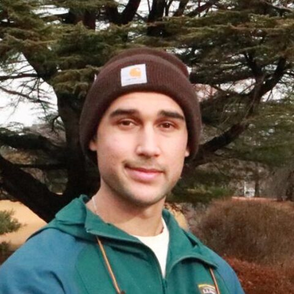

Miguel Mazumder
GaLSIC, Soka University · Japan
Human Glycome Atlas TOHSA — secure full-stack service for biodata with access control, data privacy and interoperability. NIH Common Fund Data Ecosystem: integration of n-triples/XML biomedical data with Neo4j and Cypher. Machine learning workflows and MATLAB image analysis pipelines. Interested in RDF data modeling, SPARQL, glycan data integration and ontology mapping.
Topics: Glycomics, Knowledge graphs, Machine learning, RDF/SPARQL, Web dev
Codes in: MATLAB, Python, Rust, Shell